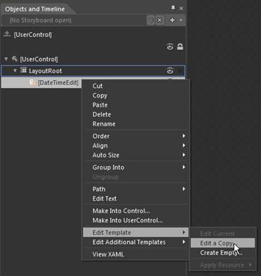
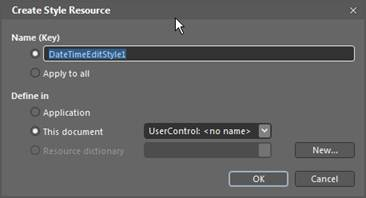
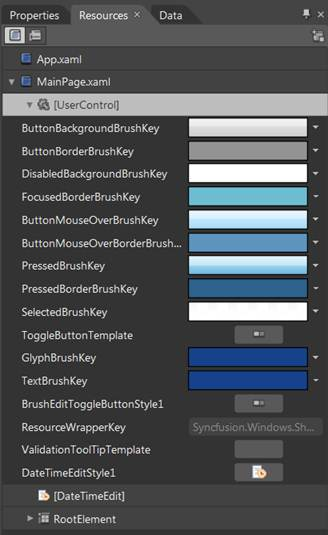
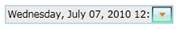

DateTimeEdit supports Blendability. DateTimeEdit template can be edited using Expression Blend in order to get a good look and feel for an application.
This can be accomplished by creating a simple Silverlight application in Blend.
Then simply drag and drop DateTimeEdit into the application from Asset tab.

Figure 444: Creating a Silverlight application in Blend
After creating DateTimeEdit, right click on DateTimeEdit control in Object and Timeline and choose Edit Template option as shown below.

Figure 445: Object and Timeline
This will open a dialog (below) where you can give a name of your style and define exactly where you want to store it.

Figure 446: Create Style Resource
All the resources will be displayed on the resources pane in the right side of design area. These resources can be editable to create a new Style.

Figure 447: Resources

Figure 448: DateTimeEdit
See Also
Creating DateTimeEdit using Blend